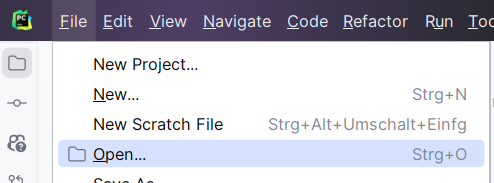
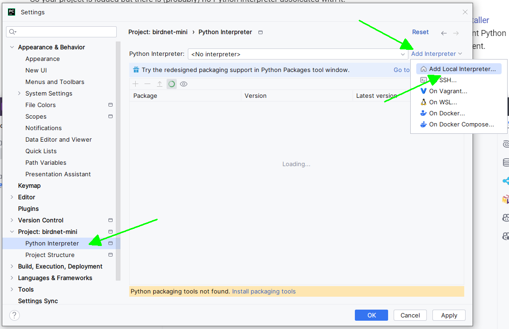

Starter Tutorial
Introduction
In this lesson you will
- Create the basic structure of your Python project you are going to work on the next days
- Start your Python editor / IDE (PyCharm) and load your project
- Create a basic "Hello World" program and run it
If you never used Python before it's recommended that you get familiar with the basic language features. Don't be afraid. It's a fairly simple computer programming language and good to learn. It will be fun!
Some links to get started:
Lesson Steps
Create Python project structure
- Create a new project folder for your Songbird classification project:
birdnet-mini - Inside the folder create another folder called
birdnet_mini(Notice the underscore!) this will be your Python package name. -
Inside the folder
birdnet_minicreate an empty file__init__.pyand a file with the namemain.pyand a file . This will be the main entry point to your program. Your project folder should now look like this:
Load your project into PyCharm and setup your project
Now you are ready to start!
-
Open the PyCharm IDE (Integrated Development Environment) by clicking its icon:
-
Select Open from the file menu

-
Select your
birdnet-miniproject folder
So your project is loaded but there is probably no Python interpreter associated with it.
We've already installed a recent Python version for you on your workshop computer. We did not simply use the standard installer which would be fine if you just do small projects and tutorials. If you start working on larger projects that use a lot of different Python packages you probably want to switch between different Python versions and packages. This is called an environment.
A system that allows you to manage and easily switch different python environments is Miniconda which is already installed at your computer. We even created an environment for you that you can use for this workshop. PyCharm support Conda environments.
-
Select
File->Settingsform the PyCharm Menu -
Select the
Python Interpreterunder theProjectsection and then selectAdd Interpreter->Add Local Interpreteron the top right:
-
In the following dialogue select
Conda Environmenton the left side and tickUse existing environment. From the Dropdown menu selectbirdnet-minimal-dev -
Confirm all Dialogues by clicking
OKmultiple times.
From now on any code that you are going to run will run using this environment.
Now you are all set to start.
Create your first program and run it
You will now write your first typical "Hello World" program.
-
From the Project Explorer on the left side, open the file
main.pyby double clicking it. -
Now the task is up to you. Create a function called
mainin that file that prints "Hello World" and then returns 0 -
Define the main entry point into your program using the following line:
and call your
mainfunction from there. -
Run the program by right-clicking
main.pyand selectRun 'main'.